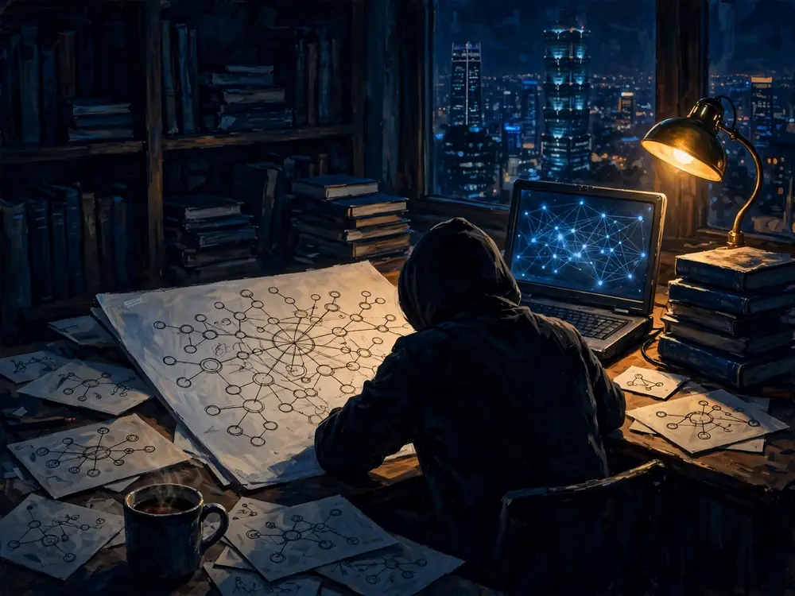
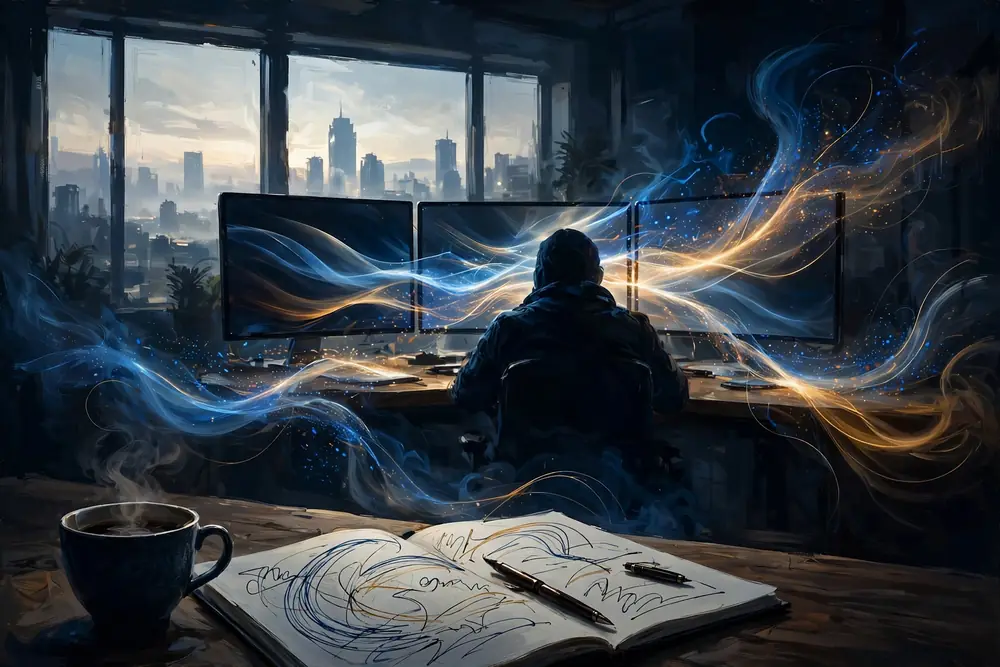
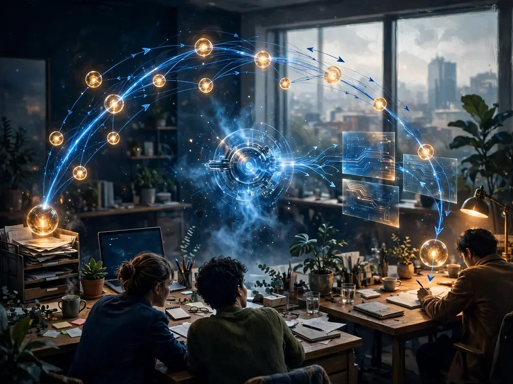

這一頁的性質：曾思遠 Giga 的個人品牌網頁，講一位橫跨機械、財金、資工三個領域的 AI Agent 企業導入顧問，如何把複雜的東西做成企業用得起來的產品。讀者是企業經營者、HR 與想導入 AI 的團隊，這一頁要讓人感覺到專業、落地、有系統，而且換成另一個人就說不通。
所以畫風選：細膩豐富的現代編輯級數位繪畫，電影感光影、前中後景層次分明，深墨藍＋鈷藍＋暖金三色，與網頁同色系。因為他的世界是流程、系統與數據，畫面要有秩序感與科技感，但不能冷冰冰，要保留人的溫度與手作感；絕不走扁平簡約風與卡通機器人。圖裡不放文字、數字、浮水印與商標，人物只用背影或剪影。
本輪共 4 張（IMG-001～004），全部已放進網頁，重出 0 張。第二輪預定再補 4 張，湊滿 8 張。
IMG-001

2008 年深夜的書桌：知識節點延伸學習法誕生的那一頁手稿。
Detailed modern editorial digital painting, cinematic lighting, 4:3 landscape composition. A quiet study desk late at night in 2008 Taipei: a young founder seen only from behind in silhouette, sketching a knowledge map on a large sheet of paper, where hand-drawn circles are connected by lines into a branching network of learning nodes. A warm desk lamp glows amber over stacked textbooks, handwritten notes, and a chunky early laptop whose screen shows a soft glowing web of connected dots. Foreground: a mug of tea and scattered paper cards with abstract node diagrams. Midground: the founder and the desk. Background: a dark bookshelf and a window with night city lights. Deep ink navy and cobalt blue palette warmed by amber lamplight, rich layered depth, painterly texture, no flat vector style, no cartoon robot. No readable text, no numbers, no letters, no logos, no watermarks, no identifiable faces.
IMG-002

交易室的清晨：曲線與數字化作光流，交易員的腦開始用 AI 做量化研究。
Detailed modern editorial digital painting, cinematic lighting, 4:3 landscape composition. A trading desk at dawn: a trader seen only from behind in silhouette, seated before three large monitors whose candlestick charts and flowing curves dissolve into streams of glowing blue and amber light that drift across the dark room like a river of data. Foreground: a coffee cup, a notebook with abstract curve sketches, a pen resting on paper. Midground: the trader, the glowing monitors, the wooden desk edge. Background: floor-to-ceiling windows with the first pale light of morning over a city skyline. Deep ink navy and cobalt blue palette with warm amber accents, rich layered depth, painterly texture, no flat vector style. No readable text, no numbers, no letters, no logos, no watermarks, no identifiable faces.
IMG-003

AI Agent 進工作流：節點串起日常流程，最後的決定永遠由人來做。
Detailed modern editorial digital painting, cinematic lighting, 4:3 landscape composition. A luminous AI workflow come to life above a modern office: a graceful arc of glowing connected nodes floats in the air like a constellation, each node a small glass orb joined by bright cobalt light-threads with tiny arrowheads, flowing from a paper inbox on the left, through a central humming hub, into tidy system panels, and ending at a warm desk where a person makes the final decision with a pen. Foreground: office desks with laptops and plants, two colleagues collaborating, seen from behind. Midground: the floating workflow arc glowing overhead. Background: large windows, soft daylight, a city view. Deep ink navy and cobalt blue palette with warm amber node glow, rich layered depth, painterly texture, no flat vector style, no cartoon robot. No readable text, no numbers, no letters, no logos, no watermarks, no identifiable faces.
IMG-004
十份產業教材免費公開：知識的光，流向工廠、店家與辦公室。
Detailed modern editorial digital painting, cinematic lighting, 4:3 landscape composition. Knowledge flowing outward to every trade: in the center, a large open book and a glowing tablet rest on a wooden table, radiating warm golden streams of light that fan out toward small scenes arranged around them — a factory floor with a supervisor, a small shopfront with its owner, an office desk with a young professional, each figure small and seen from behind, looking up toward the light. Foreground: the open book with abstract glowing diagrams and a pencil. Midground: the light streams bridging the table to the people. Background: a soft deep-blue evening sky with faint connected-node constellations. Deep ink navy and cobalt blue palette warmed by generous amber light, hopeful and warm, rich layered depth, painterly texture, no flat vector style. No readable text, no numbers, no letters, no logos, no watermarks, no identifiable faces.
[]